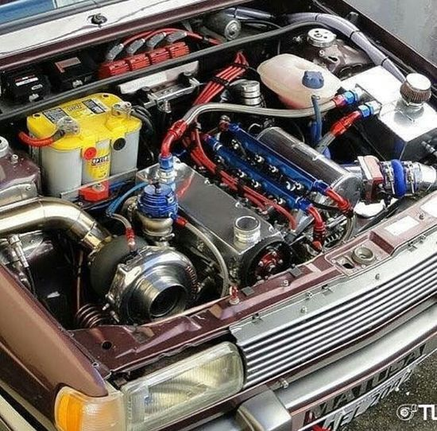

Preparação de Carros antigos
Comunidade para troca de informações, ideias e projetos (turbo
ou aspirado) com foco nos carros antigos
Sejam bem-vindos e fiquem a vontade para fazer postagens sobre o assunto, aqui não existe projeto ou dúvidas ruins.
